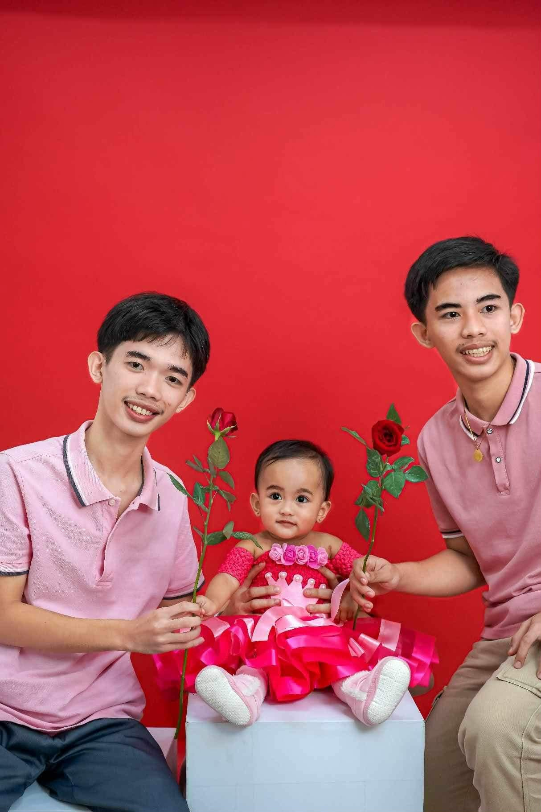
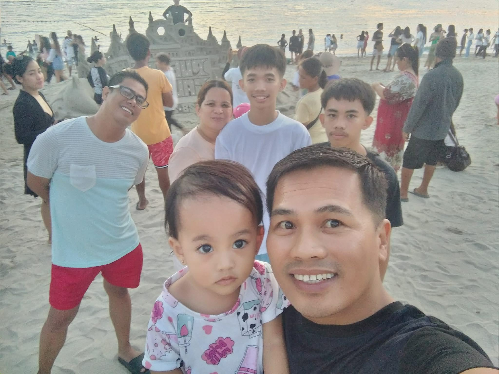
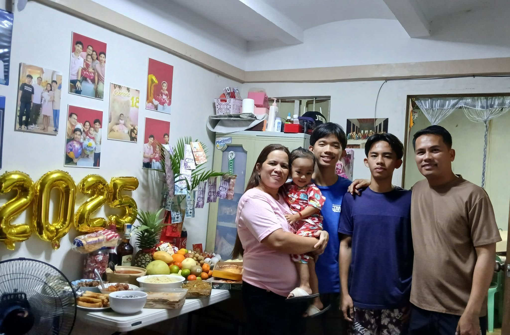
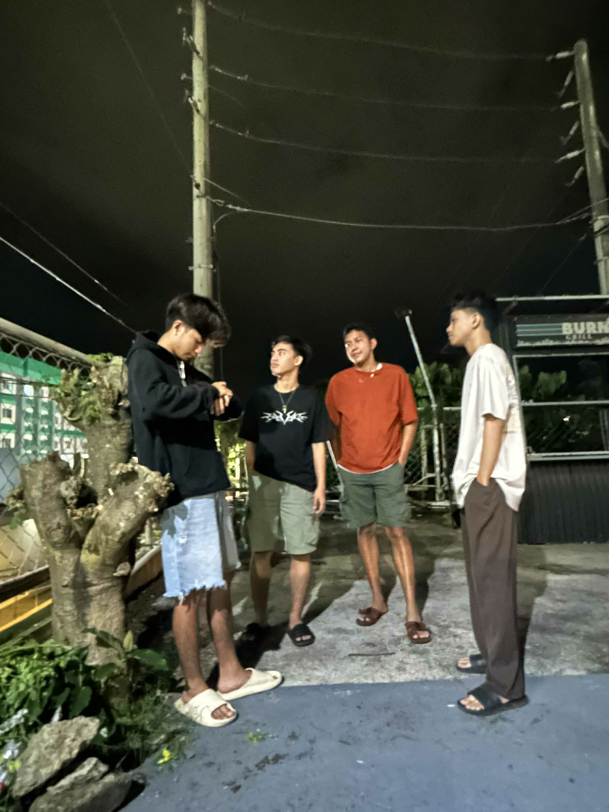
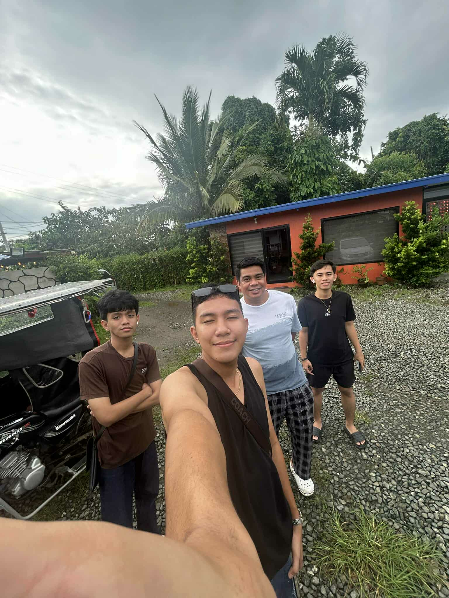
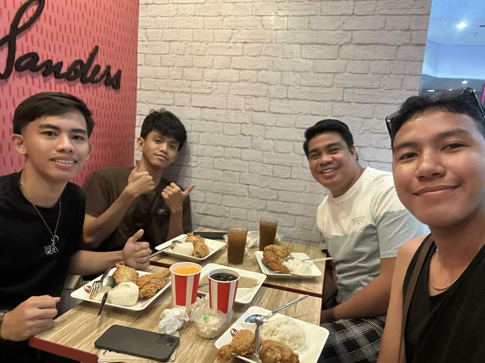

Age: 18 • BS Computer Science 1-H • Kolehiyo ng Lungsod ng Lipa
Hi! I’m Axell. I love coding, cooking, and exploring new things. Welcome to my personal website!



We’re a close-knit family we never miss going to church together and love eating out on weekends. We always make time to be complete and have fun as one!



My friends are my second family they’re always there through good and bad times. They make me laugh and brighten my day, even on busy school days. I’m so grateful for them!
Cooking: I love trying new recipes from simple snacks to full meals. It’s fun mixing ingredients and making something delicious!
Mobile Legends: I enjoy playing with friends during free time it’s a great way to unwind and bond.
Reading Wattpad: I’m into romance and fantasy stories they let me escape to different worlds and spark my imagination.